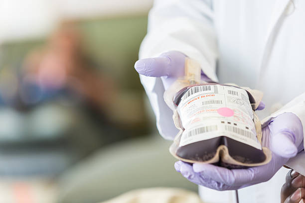

Importância da doação de sangue:

A falta do estoque de sangue em um hospital pode levar ao cancelamento de cirurgias
e de procedimentos. Um exemplo é o paciente que faz quimioterapia, já que, caso não
receba o suporte de transfusão, poderá não resistir ao tratamento. "Além disso, pode
ser um enorme prejuízo ao paciente o adiamento de cirurgias cardíacas, de transplantes
de rim, de fígado, de medula óssea, entre outros procedimentos que necessitam de sangue
e de plaquetas", diz a biomédica Cinthya Duran.
Uma pessoa adulta possui em média cinco litros de sangue e em uma doação são coletados no
máximo 450 ml. Ou seja, é menos de 10% de todo seu sangue. Quem deseja doar sangue vai passar
por uma avaliação prévia em ambulatório que tem o objetivo de detectar alguns impedimentos,
como doenças, para a doação. Essa entrevista é particular e os dados são mantidos sob total sigilo.

A doação de sangue é 100% voluntária e não causa prejuízos ao seu organismo. Uma única doação é possível
salvar até quatro vidas, uma vez que o material é separado em diferentes hemocomponentes: concentrado
de hemácias (glóbulos vermelhos), concentrado de plaquetas, plasma e crioprecipitado que podem ser
utilizados em diversas situações clínicas.